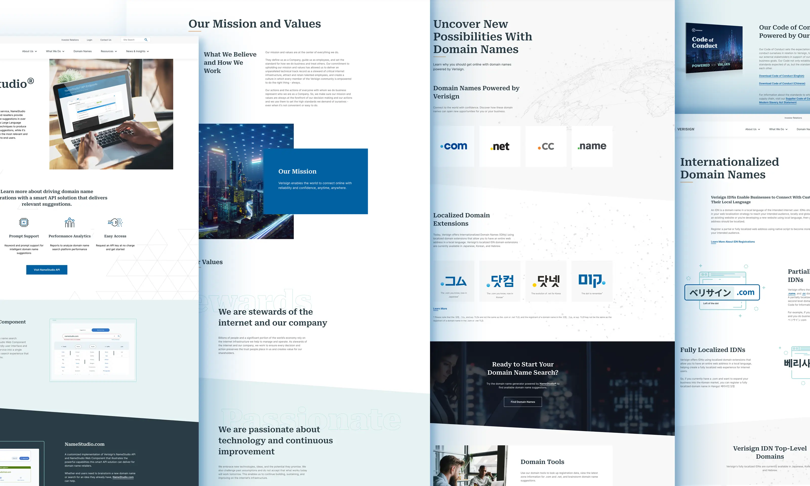
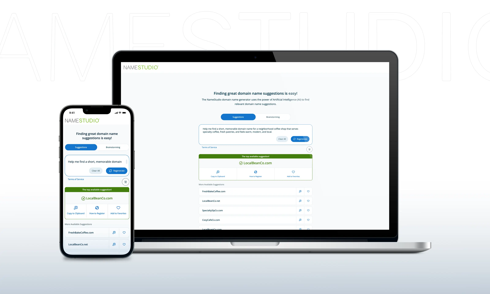

01
Raise the design standard.
Establish stronger expectations for UX quality, creative execution, brand consistency, accessibility, content structure, vendor collaboration, and production-ready delivery.
Case Study 02
At Verisign, I led UX and Creative Services across enterprise web, external-facing products, mission-critical internal tools, brand, digital marketing, print, accessibility, research, creative project management, and vendor partnerships.
In a conservative, high-security enterprise environment, the opportunity was not simply to redesign Verisign.com or modernize NameStudio. It was to build an internal capability that could deliver agency-level UX and creative work with stronger context, fewer handoffs, lower external cost, and a clearer understanding of legal, security, stakeholder, brand, and operational expectations.
That capability produced concrete outcomes: a 120+ page enterprise redesign launched internally, work that could have cost hundreds of thousands through an agency, stronger accessibility and reduced compliance risk, and a live LLM-powered NameStudio experience that increased engagement by more than 30%.
Business Context
Verisign’s digital and creative work had to support a highly trusted enterprise brand, complex technical products, strict stakeholder expectations, legal review, and a security-conscious operating environment.
But modernization required more than new visuals. The organization needed a better way to plan, prioritize, produce, review, and launch high-quality work across many teams and many types of requests.
The business needed modern enterprise web experiences, clearer product UX, stronger accessibility, better brand consistency, more predictable delivery, and less dependency on outside agencies for large-scale digital and creative execution. That mattered even more for internal enterprise tools and operational systems supporting sensitive infrastructure, where outside partners often lacked the context, access, and institutional understanding required to move quickly and safely.
For internal teams, this meant clearer intake, visibility, and capacity planning.
For the business, it meant higher-quality work, lower external spend, reduced compliance risk, and a stronger foundation for digital product innovation.
The challenge was not only to modernize individual experiences. It was to raise the standard for UX and creative work, build trust in the team, and create a delivery model that could scale across the business.
That meant making the value of the team visible, giving stakeholders a clearer path into the work, and proving that complex digital and creative initiatives could be delivered from inside the business.

01
Establish stronger expectations for UX quality, creative execution, brand consistency, accessibility, content structure, vendor collaboration, and production-ready delivery.
02
Help teams understand the value — leading product, marketing, and internal enterprise teams to seek partnership, including teams working on sensitive operational tools that could not be treated like public-facing design work.
03
Introduce clearer intake, prioritization, two-week sprints, stakeholder visibility, and capacity planning so growing demand could be sequenced, staffed, and delivered with more confidence.
04
Turn the team into a stronger internal alternative to agency support across enterprise web, product UX, brand, digital marketing, print, mission-critical internal tools, and AI-enabled product experience.
How I Led the Work
I led UX, creative, research, creative project management, accessibility, vendor contracts, and vendor relationships across a broad internal portfolio: enterprise applications, external-facing products, corporate web, brand systems, digital marketing, print creative, and product marketing.
Part of the work was helping teams see how UX and creative services could improve more than individual deliverables. As stakeholders saw the team clarify requirements, improve decisions, reduce rework, raise quality, and create stronger product and brand outcomes, demand grew across the business.
To support that demand, I introduced clearer intake, prioritization, two-week sprints, delivery governance, stakeholder visibility, capacity planning, and stronger standards for quality and execution.
The result was a team that could take on more work internally, reduce reliance on outside agencies, strengthen accessibility, improve delivery confidence, and support a wide range of business needs — from enterprise-scale web modernization and external-facing products to sensitive internal tools and live AI-enabled product work.
The examples below show how that capability worked in practice.
Proof in Practice
The Verisign.com redesign and NameStudio modernization were different kinds of work, but they proved the same larger point: Verisign could deliver high-quality UX, creative, and product work internally — with stronger context, fewer handoffs, lower agency dependency, and better alignment to legal, security, brand, operational, and stakeholder expectations.
One effort modernized a large enterprise web presence in-house. The other extended that same capability into live AI-enabled product innovation.
Focus
Modernize Verisign’s enterprise web presence across brand, UX, content, accessibility, and digital trust.
Modernize domain discovery through a redesigned NameStudio interface and live LLM-powered domain discovery and naming experience.
Scale
120+ page redesign, launched in-house inside a high-security enterprise environment.
External-facing product experience, redesigned and enhanced with LLM-powered functionality live in production.
Challenge
Deliver modern digital work without sacrificing control, accuracy, stakeholder confidence, accessibility, legal review requirements, or enterprise trust.
Make domain search and naming more useful, engaging, and intelligent while keeping the experience clear, credible, and production-ready.
UX Strategy
IA, content structure, brand translation, accessibility standards, reusable patterns, stakeholder alignment, delivery governance, and internal execution.
Product UX, domain discovery strategy, conversational experience design, A/B testing, AI integration, engagement measurement, and iteration.
What Shipped
A fully launched enterprise redesign delivered internally — work that would have cost hundreds of thousands through an agency.
A live LLM-powered domain discovery and naming experience that increased engagement by more than 30% in A/B testing.
Why It Mattered
Proved Verisign could deliver enterprise-scale modernization internally — with stronger accessibility, lower agency dependency, reduced compliance risk, and less overhead from translating internal context, legal constraints, security expectations, and stakeholder needs to outside partners.
Showed that the same internal capability could extend beyond corporate web into AI-enabled product innovation.
Together, these initiatives show how the capability worked across different levels of the organization: one effort modernized Verisign’s enterprise web presence at scale; the other brought that same discipline into a live product experience.
The goal was bigger than shipping a redesign or launching an AI feature: build the internal system needed to deliver modern, trusted, measurable digital and creative work.

Connecting the Dots
Outside agencies can bring talent, but in a company like Verisign, they also require heavy translation: brand context, legal boundaries, security expectations, stakeholder history, internal process, operational constraints, and what will or won’t survive review.
The internal UX and creative capability changed that equation. More work could move inside the business — across enterprise web, external products, brand, digital marketing, print, product communications, and mission-critical internal tools — with stronger standards, fewer handoffs, and deeper organizational context.
That mattered most when the work involved homegrown internal systems, operational tools, and security-sensitive workflows that Verisign could not casually expose to outside agencies because of IP, cybersecurity, and infrastructure-stability concerns. Building UX capability inside the business allowed those experiences to be improved without compromising access, trust, or control.
Together, that capability helped Verisign deliver better work more efficiently: a 120+ page redesign launched internally, agency-level costs avoided, stronger accessibility, reduced compliance risk, improved internal-tool experiences, and a live LLM-powered NameStudio experience that increased engagement by more than 30%.